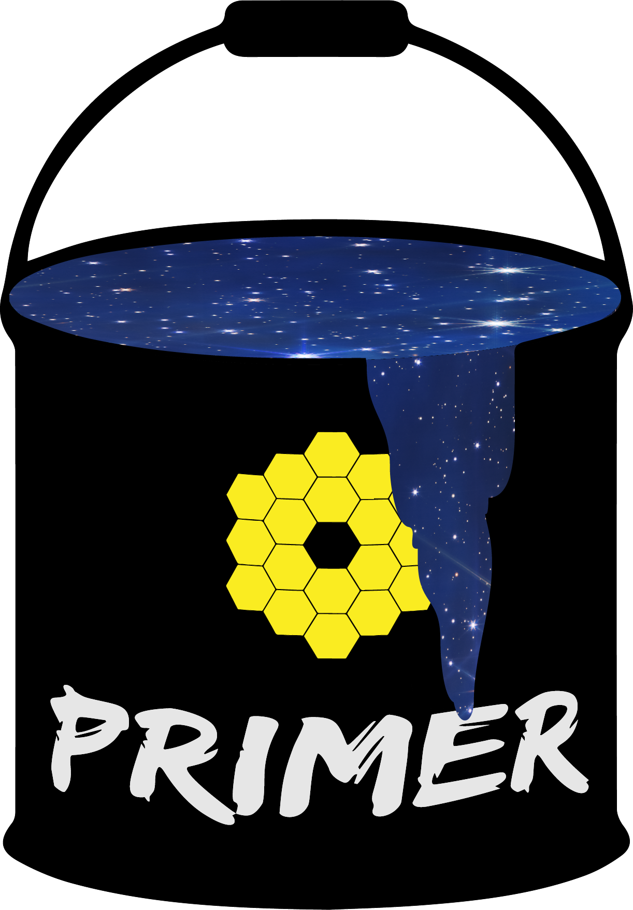
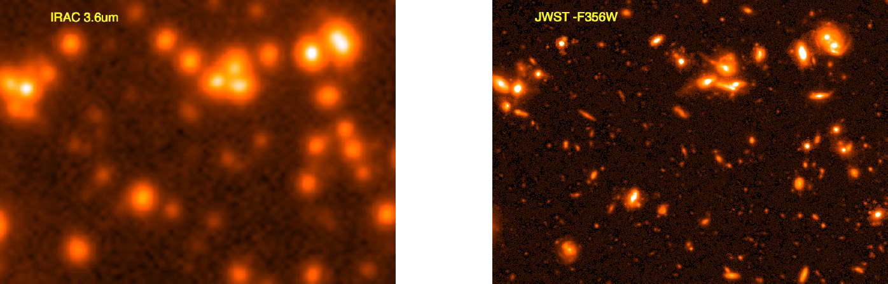
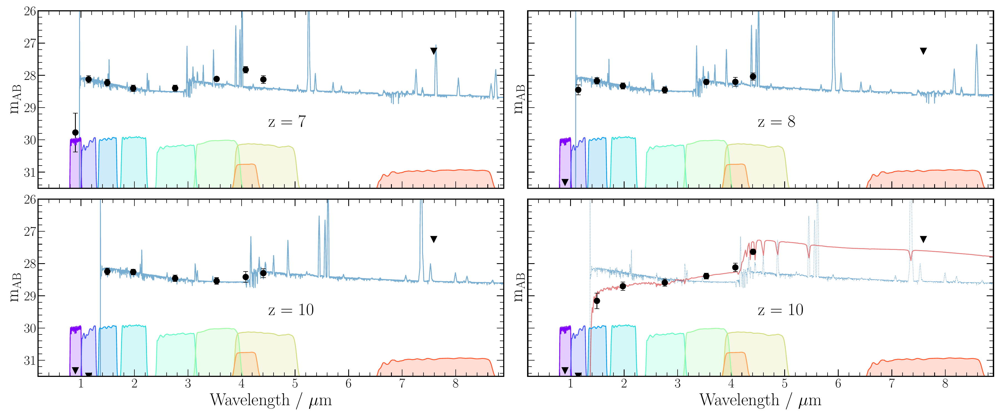
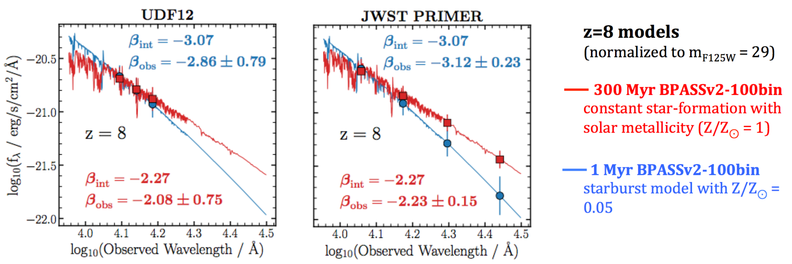
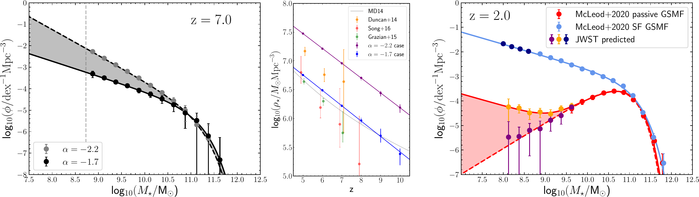
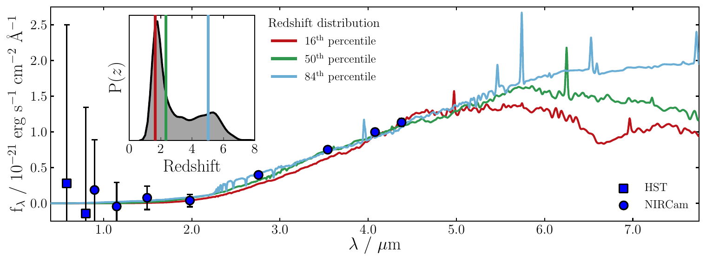
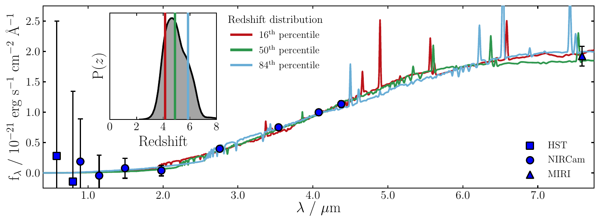
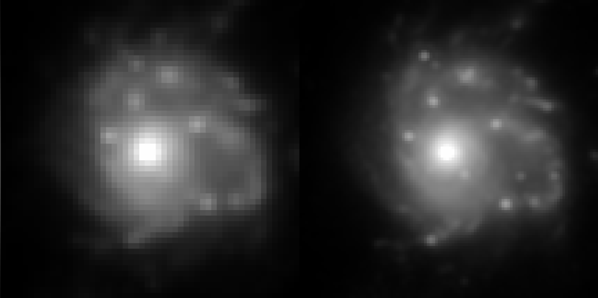
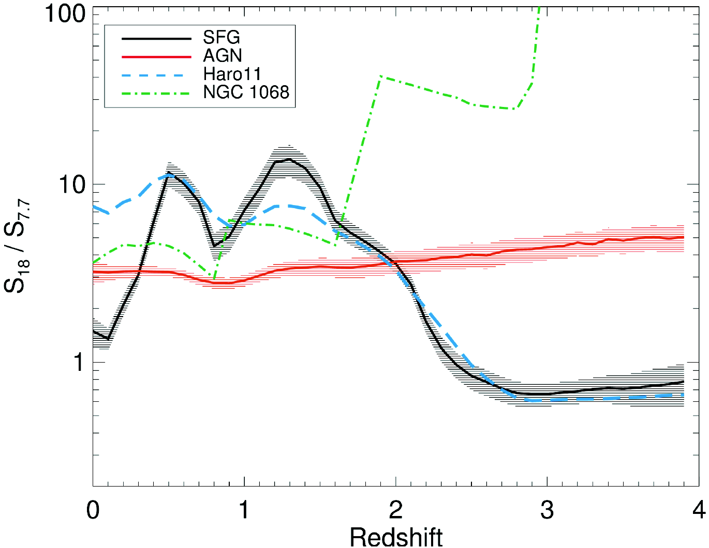

PRIMER will revolutionize our knowledge of galaxy and black-hole formation/evolution out to the highest redshifts yet probed. Moreover, executed early in the JWST mission, PRIMER will yield a wealth of new high-redshift targets for follow-up spectroscopy with JWST in subsequent cycles, and with the Atacama Large Millimeter Array (ALMA).
The key scientific goals of PRIMER are illustrated by the figures below.
See also the figures on the page about the Observations.
The official program information for PRIMER (GO 1837),
including the Public PDF, is available from STScI.

The transformational power of JWST imaging longward of ~ 2.5 micron Left: a 44 x 34 arcsec region of the deepest available Spitzer IRAC 3.6 micron imaging. Right: a prediction of how the same region will appear with the PRIMER NIRCam F356W imaging using the empirically based EGG simulations (Schreiber et al. 2017). These simulations predict that PRIMER will reveal ~ 120,000 galaxies, ~ 70% of which are new (i.e. undetected by HST or Spitzer).

The full power of PRIMER multi-band imaging for the discovery and study of high-z galaxies. The blue SED shown at z = 7, 8, 10 is that of a simulated star-forming galaxy with 1/3 solar metalicity, with the data-points showing the simulated photometry (and uncertainty). As well as clear delineation of the Lyman break, the impact of the strong rest-frame optical emission lines on the photometry is clear; F444W-F410M colour is invaluable for redshift refinement, estimates of emission-line equivalent widths, and resulting corrections to stellar mass. The 4th panel shows an alternative (red) SED at z ~ 10, produced by a starburst at z ~ 15 (~ 200 Myr old), showing that PRIMER can provide key information on very early star-formation activity.

The accuracy with which the UV continuum slope β of z ~ 8 galaxies can be measured with PRIMER, as compared to current HST measurements. Left: the (very poor) accuracy with which the intrinsic model UV slopes (βint = −2.3 (red) and βint = −3.1 (blue)) can be recovered with the deepest existing HST F125W+F140W+F160W photometry. Right: with the rest-frame UV covered by NIRCam F115W+F150W+F200W+F277W, the β values are recovered to ~ 5% accuracy, enabling these SEDs to be clearly distinguished, and hence potentially exotic, dust-free, low-metallicity systems to be cleanly isolated for subsequent study.

The predicted impact of PRIMER on our knowledge of the growth of galaxy masses. Left: PRIMER will measure the form of the galaxy mass function at z ≥ 7 for the first time, providing a crucial test of models of early galaxy growth, and constraining star-formation activity at very early times: the low-mass slope will be constrained to Δα ≃ 0.06. Centre: resulting constraints on the early growth of stellar mass density, to ≤ 10% accuracy, showing the importance of α; existing data clearly provide no meaningful constraints, the grey curve being simply the growth inferred from integrating SFR density (Madau & Dickinson 2014). Right: the ability of PRIMER to probe down to stellar masses M ≃ 108 M☉ will reveal the prevalence of low-mass quiescent galaxies at z ≥ 1−3, a key test of theories of early quenching mechanisms.


The transformative impact of adding parallel MIRI 7.7-micron imaging. Top: here we show that even 8-band NIRCam imaging cannot constrain the SED, or indeed redshift (multiple solutions from z = 2 to z = 5) of an example very red galaxy. Bottom: the addition of MIRI 7.7-micron imaging of the depth proposed here can resolve these uncertainties, in this case unambiguously revealing the source to be a dusty (AV = 3.2 mag) galaxy at z ~ 5.

The power of fully-sampled NIRCam imaging. Left: simulated NIRCam image of a clumpy z ≃ 2 galaxy in the F277W filter with the native NIRCam-LW pixel scale (0.063 arcsec). Right: NIRCam image of the same galaxy in the same filter but this time with sub-pixel sampling, and image reconstruction with 50% smaller pixels. Not only are the structural details much clearer, but several compact clumps are simply not detected in the left-hand undersampled image: properly sampled imaging enhances the detection of faint compact objects (such as extreme redshift galaxies), as well as improving the precision of morphological studies.

The power of 7.7+18 micron photometry for separating dust obscured SF and AGN activity (Kirkpatrick et al. 2017). Interestingly, a heavily obscured source (in this case, NGC 1068), actually has the potential to be a dropout in the 7.7 micron band at z > 2.5. The AGN simulations strongly indicate that it is best not to split the MIRI long wavelength time between 18 and 21 micron; there is little to be gained from 21 micron in terms of colour information, so it is better to go deeper, especially as it may be possible to uncover 7.7-micron dropout sources.